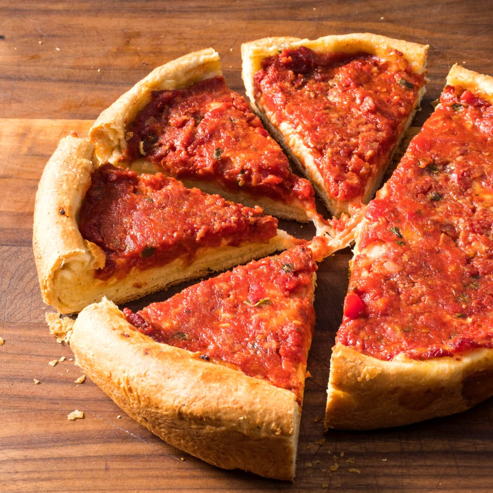
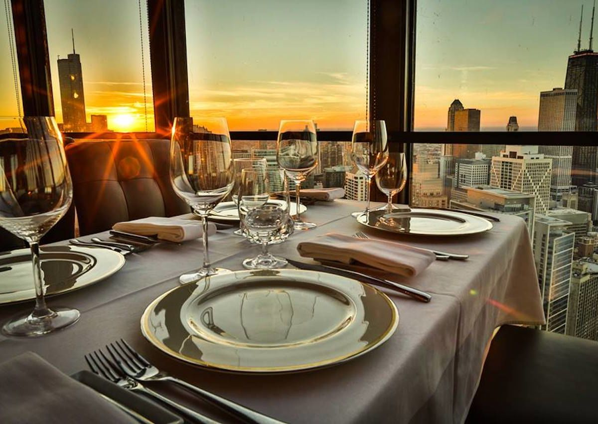
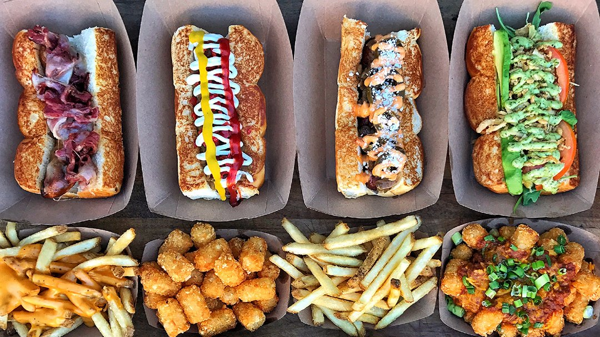

Chicago-Style Pizza
Deep dish pizza is one of the most famous food experiences in Chicago.

Deep dish pizza is one of the most famous food experiences in Chicago.

The city has many restaurants that offer steak, seafood, pasta, and modern American dishes.

Chicago hot dogs, tacos, popcorn, and quick lunch spots are easy to find around the city.